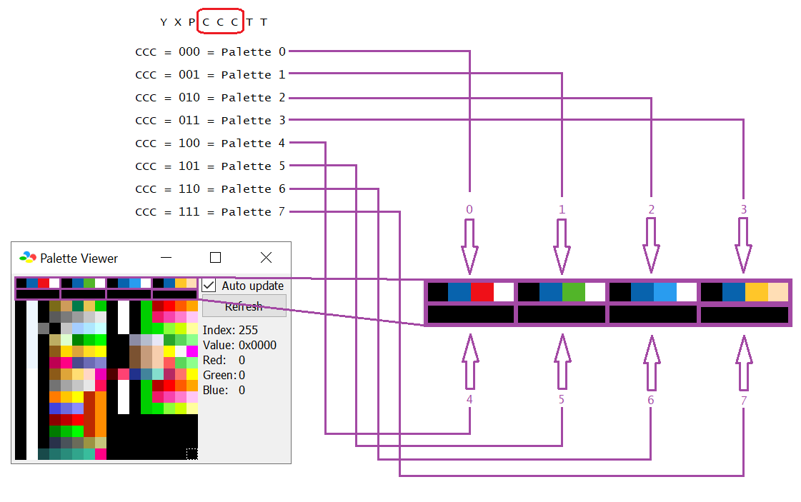

back
Palette documentation
You probably be wondering, where does the CCC bits in YXPCCCTT point to what color in the palette editor? Well, the CCC refers to what arrays of color
on the palette editor, numbered from 0-7 inclusive. On a 2BPP (2 bits per pixel) format (which the status bar graphic uses), each tile possess 4 colors, and each color occupies 2 bytes, stored in binary
as 0bbbbbgggggrrrrr (r g and b means the red, green and blue colors, each ranging from $00-$1F inclusive). Information is better displayed as visual than mere text:
